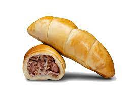

Cachitos

Description
Cachitos are a Venezuelan food similar to the croissant, and are often filled with ham and cheese.
ingredients
- 1 cup Warm Water
- 1 No.s pack active dry yeast
- 4 tablespoon Sugar
- 1 teaspoon Salt
- 1/4 cup Butter
- 3 cup Flour
- 1 tablespoon flour for dusting
- 600 gram Ham
- 300 gram bacon
Steps
- in a bowl take flour and add a mixture of warm water, sugar and yeast to it.
- add butter and salt to the bowl and combine everything together.
- knead it into a dough and set aside for 40 minutes.
- heat oil in a pan and saute ham and bacon in it.
- flatten the dough and cut it into triangular pieces.
- spread ham-bacon mix on top of the rolled dough and roll it to make cachitos
- place them on a baking tray and bake for 15 minutes at 375 degree f.